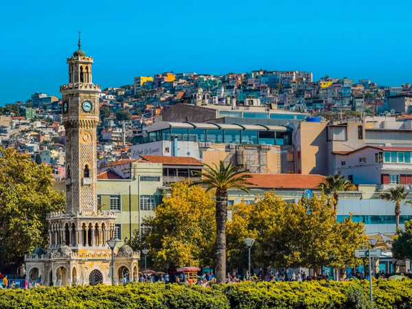

İzmir Hakkında
İzmir, Ege Bölgesi'nin en büyük ve en popüler şehirlerinden biridir. Tarihi ve kültürel zenginliklerinin yanı sıra doğal güzellikleriyle de dikkat çeker. Efes Antik Kenti, Konak Meydanı ve Çeşme Plajları gibi önemli mekanlara ev sahipliği yapmaktadır.
Gezilecek Yerler
- Efes Antik Kenti
- Konak Meydanı
- Çeşme Plajları
- Kadifekale
- İzmir Saat Kulesi
Turlar
İzmir'de yapabileceğiniz aktiviteler ve turlar:
- Efes Antik Kenti Turu
- Çeşme Plajları Turu
- İzmir Tarihi Yokuş Turu
- İzmir Adaları Turu
Fiyat Bilgisi
İzmir'de sunulan tur hizmetlerinin ortalama fiyatları:
- Efes Antik Kenti Turu: 350 TL
- Çeşme Plajları Turu: 250 TL
- İzmir Tarihi Yokuş Turu: 300 TL
- İzmir Adaları Turu: 400 TL